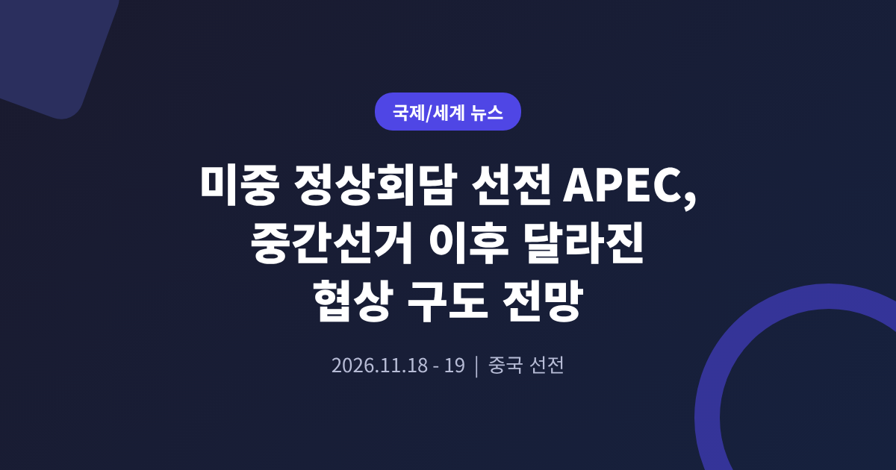
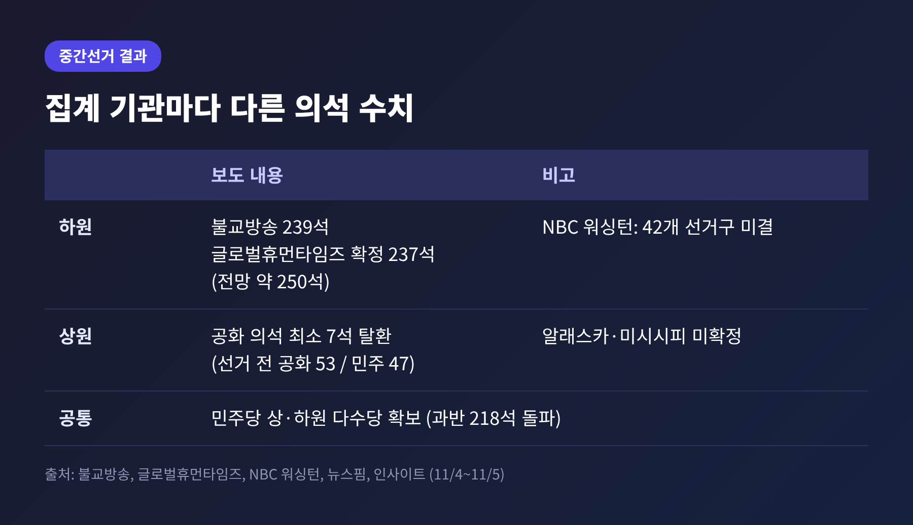
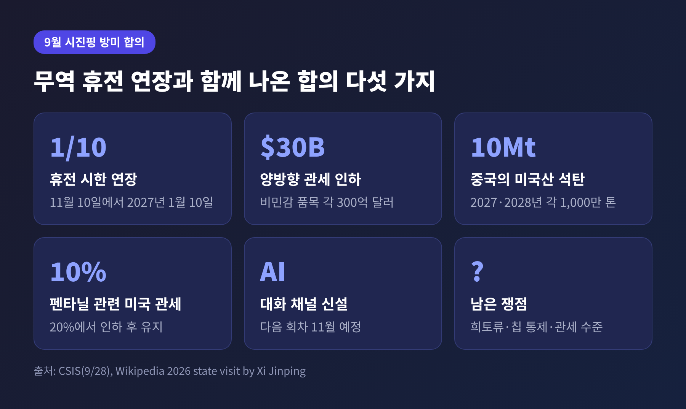
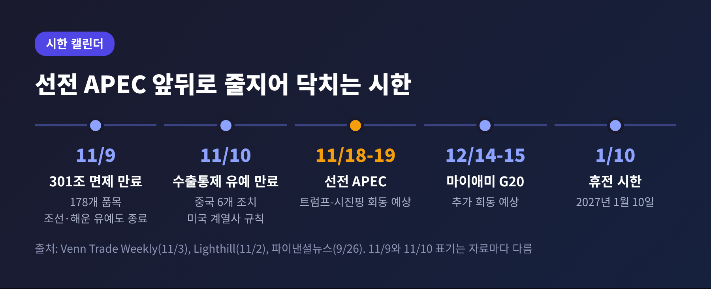
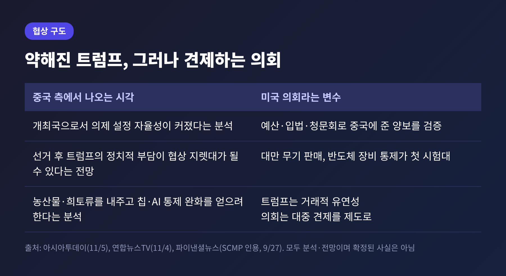
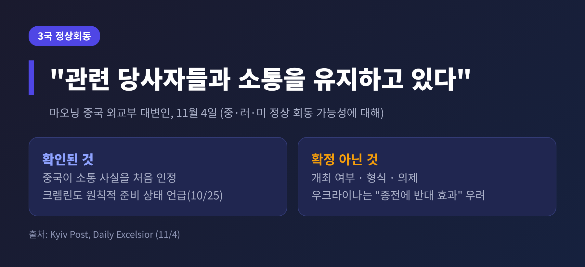

이번 글에서는 미국 중간선거 직후 열리는 미중 정상회담의 구도를 정리해 보겠습니다. 트럼프 대통령은 11월 18~19일 중국 선전 APEC에서 시진핑 주석과 다시 마주할 예정이고, 그 전에 무역 휴전과 관련한 시한이 줄줄이 닥칩니다. 핵심은 선거로 약해진 트럼프가 협상 테이블에서 어떤 위치에 서느냐입니다.
미국 중간선거는 11월 3일(현지시간) 치러졌고, 민주당이 상·하원을 모두 가져간 것으로 보도되었습니다. 다만 최종 집계는 아직 닫히지 않았습니다. 알래스카와 미시시피의 상원 개표가 계속되고 있고, 하원도 일부 선거구가 미결입니다.
소스별 숫자도 조금씩 다릅니다. 하원은 불교방송이 239석, 글로벌휴먼타임즈가 확정 237석(전망치는 약 250석)으로 전했습니다. NBC 워싱턴 보도(11월 4일)는 42개 선거구가 남아 있다고 밝혔습니다. 상원은 공화당 의석 최소 7석을 민주당이 탈환했다는 보도가 여럿입니다.

선거가 끝나자마자 일정이 이어집니다. 연합뉴스TV는 11월 4일 보도에서 트럼프가 11월 18일 선전 APEC부터 12월 14일 마이애미 G20까지 6주간 정상외교에 나선다고 전했습니다. 올해 두 정상은 이미 5월 베이징, 9월 워싱턴에서 한 번씩 만났습니다. 두 번을 더 만나면 올해만 네 번이 됩니다.
9월 23~25일 시진핑 주석의 국빈 방미에서 양국은 무역 휴전 시한을 11월 10일에서 2027년 1월 10일로 연장했습니다. 미국 시각에서 보면 이 휴전은 관세와 수출통제를 맞교환한 임시 장치입니다.
CSIS는 이 합의를 "취약하다"고 평가했습니다. 희토류, 반도체 수출통제, 관세 수준을 둘러싼 이견이 그대로 남아 있다는 이유입니다. 미국이 문제 삼는 희토류 공급과 중국이 문제 삼는 칩 통제는 서로 맞물려 있습니다.

시한을 늘린 것과 모든 조치를 늘린 것은 다른 이야기입니다. 무역 자문사 Venn은 이번 연장이 2025년 부산 합의에서 유예된 개별 관세·수출통제 조치를 자동으로 덮지는 않는다고 분석했습니다. 이 해석이 맞다면 정상회담 전에 실무 차원의 결정이 먼저 나와야 합니다.
APEC 이전에 닥치는 시한을 날짜순으로 보면 다음과 같습니다. 모두 Venn과 로펌 Lighthill 자료에 근거한 것입니다.
면제 만료일은 자료마다 11월 9일 또는 10일로 달리 적혀 있습니다. 적용 시간대 차이로 보이지만 확인되지는 않습니다.

의제도 무역에만 머물지 않습니다. 연합뉴스TV에 따르면 보잉 항공기 200대 구매 계약 확정, 중국 기업의 대미 투자가 막판 협상 쟁점입니다. 미국은 농산물 구매와 희토류 공급 약속의 이행을 요구하고 있고, 중국은 반도체와 AI 통제 완화를 바란다는 분석이 나옵니다. 5월 베이징 회담에서는 알리바바, 텐센트 등 중국 10개 기업이 엔비디아 H200 칩을 살 수 있도록 허용되었습니다.
예전에는 중간선거 직후라도 대통령이 국내 정치의 힘을 안고 협상에 나선다고들 했습니다. 이번에는 보는 눈이 갈립니다. 중국 외교부 마오닝 대변인은 11월 4일 "미국 중간선거는 미국의 내정"이라고 밝히면서도 두 정상의 합의 이행을 위해 계속 협력하겠다고 했습니다.
공개 발언은 절제되어 있지만, 아시아투데이는 베이징이 비공개로는 약해진 트럼프를 주시한다고 전했습니다. 한 중국 학자는 트럼프가 앞으로 중국을 함부로 대하기 어려워졌다고 평가했습니다. 9월에는 SCMP를 인용한 보도에서, 개최국인 중국이 의제 설정에서 더 큰 자율성을 갖는다는 분석도 나왔습니다.

반대 방향의 힘도 있습니다. 연합뉴스TV는 새 의회가 예산, 입법, 청문회로 중국에 준 양보를 검증할 수 있다고 짚었습니다. 대만 무기 판매와 반도체 장비 통제가 첫 시험대로 거론됩니다. 트럼프는 거래적 유연성을 선호하지만 의회는 대중 견제를 제도로 굳히려 한다는 분석입니다.
트럼프의 발언은 엇갈립니다. 그는 민주당 승리를 축하하고 이민 등에서 협력하겠다고 말했지만, 받아들이기 어려운 법안에는 거부권을 쓰겠다고 했습니다. 자신이 투표용지에 있었다면 이겼을 것이라고도 했습니다. 이란 전쟁이 패배에 영향을 줬다는 견해에는 "대체로 맞다"고 답했습니다. 관세가 선거에 어떤 영향을 줬는지는 소스마다 평가가 다릅니다. 글로벌휴먼타임즈만 보편관세가 거부 요인이었다고 전망했을 뿐, 다른 매체는 다루지 않았습니다.
선전에서 관심을 모으는 또 하나의 장면은 미중러 3국 정상회동입니다. 마오닝 대변인은 11월 4일 관련 당사자들과 소통을 유지하고 있다고 처음 확인했습니다. 크렘린은 우샤코프 보좌관의 10월 25일 발언으로 원칙적 준비 상태를 밝힌 바 있습니다. 다만 베이징은 개최 여부나 형식, 의제가 정해졌다고는 말하지 않았습니다.

우크라이나 쪽 시각은 다릅니다. 시비하 외무장관은 러시아·중국·미국 정상회담이 종전에는 반대 효과를 낼 것이라고 말했습니다. 젤렌스키 대통령은 우크라이나의 참여가 필요하다는 입장입니다. 같은 기간 미국, 우크라이나, 러시아의 실무 협의는 11월 10~11일 아부다비에서 예정되어 있습니다.
남는 질문은 세 가지입니다. 11월 9~10일 시한을 어떻게 넘기는지, 보잉 계약 같은 구체적 성과가 나오는지, 그리고 새 의회가 어떤 신호를 보내는지입니다. 아직 백악관과 중국 외교부의 양자회담 일시 공식 발표는 확인되지 않았습니다. 이 글의 전망도 그 한계 안에서 읽어야 합니다.
정리하면 이렇습니다.
"선거는 끝났지만, 트럼프의 협상은 이제 시작입니다."
선전에서 어떤 합의가 나오든, 그 결과를 다시 평가하는 일은 새 의회와 시한표가 맡게 될 것입니다. 18일 이후 실제로 달라지는 것은 무엇일까요. 그 답은 며칠 앞으로 다가온 11월 9일과 10일의 선택에서 먼저 보일 것이라고 생각합니다.
출처: Venn Trade Weekly(11/3), CSIS(9/28), Lighthill(11/2), 연합뉴스TV(11/4), 아시아투데이(11/5), Kyiv Post(11/4), Daily Excelsior(11/4), 파이낸셜뉴스(9/26, 9/27), 뉴스핌(11/4), NBC 워싱턴(11/4), 인사이트·불교방송·글로벌휴먼타임즈(11/5), Wikipedia(2026 Xi 방미, Trump 방중)